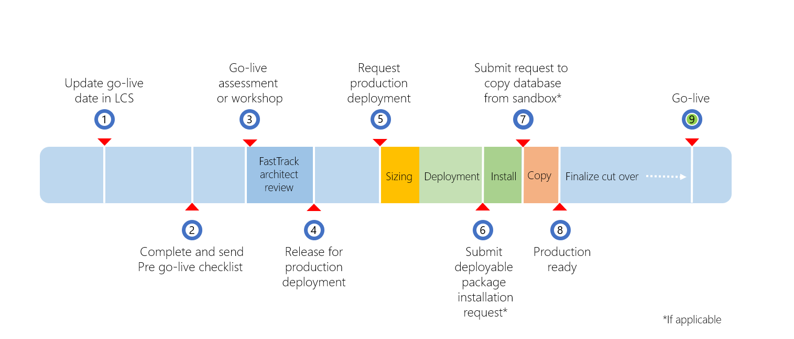

Prepare for go-live
This topic describes how to prepare to go live with a project by using Microsoft Dynamics Lifecycle Services (LCS).
Production and Sandbox can only be deployed in two different types of environments: Microsoft Managed or Self-Service. Both follow the same preparation for go-live, but the service level agreements (SLA) and some of the process steps are different.
This graphic and the following table list the phases of the go-live process, the environment type to which each phase applies with the expected duration, and who is responsible to take the action.

| Phase | Action | Environment type | Duration/When | Who | Notes |
|---|---|---|---|---|---|
| 1 | Update Go-live date in LCS | Both | At the latest 2-3 months in advance | Customer/Partner | The milestone dates should be kept up to date on an ongoing basis. |
| 2 | Complete and send pre go-live checklist | Both | After user acceptance testing (UAT) complete | Customer/Partner | Follow the instructions provided in the "FastTrack Go-live Assessment" section later in this topic. |
| 3 | Project Go-Live assessment (FastTrack Essentials) | Both | 3-business days for initial report, plus additional time for mitigation, if required | Microsoft-FastTrack Solution Architect | Solution Architect delivers assessment after checklist is received and continues review until questions are clarified and mitigations are in place, if applicable. |
| Go-live Assessment workshop (FastTrack) | Both | To coordinate with architect assigned | Microsoft-FastTrack Solution Architect | ||
| 4 | Release for production deployment | Microsoft Managed | Immediate upon successfully completed assessment | Microsoft-FastTrack Solution Architect | Do not submit production request until the assessment is successfully completed. |
| Self-Service | Immediate upon successfully completed assessment and Configure button is enabled | Microsoft-FastTrack Solution Architect | For Self-Service deployment, the Configure button remains disabled until the assessment is complete. | ||
| 5 | Production deployment request | Microsoft Managed | Self-service | Customer/Partner | The production deployment request should only be submitted after the FastTrack Architect has finished the assessment. |
| Self-Service | Self-service | Customer/Partner | After the assessment is complete, the Configure button will be enabled and customer will be able to request the production deployment. | ||
| Sizing | Both | Immediate in case of automatic sizing. Could require further clarifications of the subscription estimate. | Microsoft-Dynamic Service Engineering (DSE) | Automatic sizing based on subscription estimate by default, manual sizing by exception. | |
| Deployment | Microsoft Managed | 48 hours | Microsoft-Dynamic Service Engineering (DSE) | Status in LCS reflects the deployment progress. If there are any questions about your request, they will be posted as Comments on the service request. | |
| Self-Service | An average of 30 minutes | Microsoft-FastTrack Solution Architect | The deployment could take an average of 30 minutes after the assessment has completed and the production environment has been requested. For more information, see Deploy a new environment. | ||
| 6 | Deployable package installation request | Both | Self-service | Customer/Partner | Follow the instructions in Apply updates. The packages must contain all the models and binaries consolidated in an All-in-one deployable package. |
| Package installation | Both | Minimum 5 hours lead time and 4 hours downtime | Microsoft-Dynamic Service Engineering (DSE) | Generally, 95% of updates are applied in less than one hour, however we still recommend that you provide a downtime window of four hours in case a rollback is required for any reason. When the package deployment succeeds, the environment will be available as soon as the package deployment has finished, which means that the longer downtime window does not have any negative effect on the availability of the system. | |
| 7 | Database copy from Sandbox request (if applicable) | Both | Self-service | Customer/Partner | Follow the instructions Self-service database refresh. If you have a golden configuration you can review Golden configuration promotion. |
| Copy database | Both | Five hours lead time and four hours downtime | Microsoft-Dynamic Service Engineering (DSE) | Generally, the database copy is completed in less than one hour. We still recommend that you provide a downtime window of four hours in case a rollback is required for any reason. | |
| 8 | Production ready | Both | After all previous steps have been completed | Customer/Partner | Customer can take control of the production environment. |
| Cutover activities | Both | Depends on the project | Customer/Partner | ||
| 9 | Go live | Both | Depends on the project | Customer/Partner |
Completing the LCS methodology
A major milestone in each implementation project is the cutover to the production environment.
To ensure that the production environment is used for live operations, Microsoft will provision the production instance only when the implementation is approaching the Operate phase, after the required activities in the LCS methodology are complete. For more information about the environments in your subscription, see the Licensing guide.
Customers must complete the Analysis, Design and Develop, and Test phases in the LCS methodology before the Configure button that is used to request the production environment becomes available.
Note
For Self-Service environments, the Configure button will only become available after the Solution Architect has signed off on the assessment.
To complete a phase in LCS, you must first complete every required step in that phase. When all the steps in a phase are completed, you can complete the whole phase. You can always reopen a phase later if you must make changes. If you require more help, see Lifecycle Services (LCS) for Finance and Operations apps customers.
The process of completing a step has two parts:
- Do the actual work, such as a fit-gap analysis or user acceptance testing (UAT).
- Mark the corresponding step in the LCS methodology as completed.
It's good practice to complete the steps in the methodology as you make progress with the implementation. Don't wait until the last minute. Don't just click through all the steps so that you can get a production environment. It's in the customer's best interest to have a solid implementation.
UAT completion and solution sign off
During the UAT phase, you must test all the business processes that you've implemented, and any customizations that you've made, in a Sandbox, or Standard Acceptance Test, environment in the implementation project. To help ensure a successful go-live, you should consider the following as you complete the UAT phase:
- Test cases cover the entire scope of requirements.
- Test by using migrated data. This data should include master data and opening balances, even if they aren't yet final.
- Test by using the correct security roles (default roles and custom roles) that are assigned to users.
- Make sure that the solution complies with any company-specific and industry-specific regulatory requirements.
- Run the Customization Analysis Report (CAR) and resolve critical issues.
- Complete performance testing.
- Document all features, and obtain approval and sign-off from the customer.
Regardless of whether the environment is a cloud-hosted environment or a downloaded virtual hard disk (VHD), testing can't be considered complete when you test only in an environment that is a developer or demo topology. Here are the reasons:
- The topology of the Tier-1 environments differs from the topology of your production environment. It's important that you test all functionality on a Tier-2 or higher sandbox environment in the Microsoft-managed subscription. It's especially important that you test integrations, printing functionality, workflow functionality, and warehouse and commerce devices in the sandbox environment.
- System performance can't be measured when you do the UAT on local virtual machines (VMs) or VMs that are privately hosted.
- To prevent delays during the cutover process, it's important that the team experience the servicing in LCS during the implementation. This servicing includes the processes of applying deployable packages, creating service requests, and moving database between environments.
FastTrack Go-live assessment
All customers must complete a go-live review with the Microsoft FastTrack team before their production environment can be deployed. This assessment should be successfully completed before you request your production environment. If you aren't familiar with Microsoft FastTrack, see FastTrack for Dynamics 365 home page.
About eight weeks before go-live, the FastTrack team will ask you to fill in a go-live checklist.
You can download the checklist from Dynamics 365 Community on the Go-live Planning TechTalk page.
The project manager or a key project member must complete the go-live checklist during the pre-go-live phase of the project. Typically, the checklist is completed four to six weeks before the proposed go-live date, when UAT is completed or almost completed.
When you've completed the go-live checklist, email it to Dynamics 365 FO Go-Live d365fogl@microsoft.com. Always include a key stakeholder from the customer and the implementation partner on the email.
After the checklist is submitted, a Microsoft solution architect will review the project and provide an assessment that describes the potential risks, best practices, and recommendations for a successful go-live of the project. In some cases, the solution architect might highlight risk factors and ask for a mitigation plan. When the assessment is completed, the solution architect will indicate that you're ready to request the production environment in LCS.
For Microsoft Managed environments, if you request the production environment before the assessment is completed, the deployment will remain in the Queued state until the assessment is successfully completed. For Self-Service environments, the Configure button to request production will be only enabled after the assessment is completed.
You can cancel an environment deployment request while it is in a Queued state by following these steps:
- Select Queued.
- On the Customer sign-off tab, select Clear sign-off.
This will set the environment back into a state of Configure and allow you to make changes to the configuration, such as selecting a different data center or environment topology.
Requesting the production environment
Note
The production environment is used exclusively for running your business operations and shouldn't be used for testing. You will be able to perform the cutover, and if planned, to mock the cutover in production. To test the solution, you must use a UAT environment, which is designed with the necessary elements and services for testing.
After you've completed the analysis, design and develop, and test phases in the LCS methodology, and the go-live assessment has concluded that the project is ready, you can request your production environment.
We recommend that you select a service account, for example a generic user account, as the Admin user of the environments that you deploy. If you use a named user account, you might not be able to access an environment if that user isn't available. Here are some scenarios where the Admin user must access an environment:
- First sign-in to any environment after initial deployment – In this case, the Admin user is the only user who can access the environment.
- First sign-in to a sandbox environment after a database refresh from the production environment – In this case, all user accounts except the Admin account are unable to sign in.
Your production environment should be deployed to the same datacenter where your sandbox environments are deployed.
After you've signed off on the request for the production environment, Microsoft is responsible for deploying the production environment for you. For Microsoft Managed environments, the Microsoft service level agreement (SLA) for deployment of a production environment is 48 hours. The production environment can be deployed at any time within 48 hours after you submit the request, provided that your usage profile doesn't require additional information. For Self-Service environments, the deployment will take around 30 minutes after the production request has been submitted. You can view the progress of the deployment in LCS. Typically, the status of the production environment request remains Queued for a few hours before it's changed to Deploying.
When you submit the deployment request, a service request for the Microsoft Dynamics Service Engineering (DSE) team is automatically created. You can view this service request in the Service requests list in LCS. If the DSE team has questions that prevent them from deploying the production environment, they will add a comment to the service request. For example, the DSE team might ask that you update the subscription estimate or change the datacenter. In some cases, you might have to clear the sign-off from the production deployment request to make changes.
[!include[footer-include](../../../includes/footer-banner.md)]